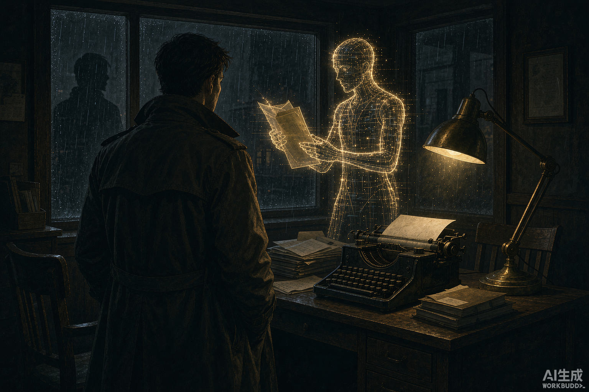

AI 能算出九成案件的答案。剩下那一成——数据里没有脚印、算法里没有动机的案件，会被安乐椅派的助手转单送到你桌上。你是二十一世纪最后的名侦探：冷硬派、现场派、社会派。
每一局，后台随机抽取「诡计 + 七宗罪动机 + 舞台 + 被害人」拼成一件全新的案子，设定对玩家保密。
AI 主理人负责演出一切：安乐椅派助手转单、案发现场、所有嫌疑人与证词。你的行动——搜查地点与物品、问询人物、呼叫助手做数据比对、随时整理推理。所有破案必需线索都会在揭晓前出现，公平本格，说到做到。
准备好后用【最终推理】指认凶手、陈述手法与动机。主理人逐项判定并评分（S / A / B / C），再揭晓完整真相与守则吐槽。